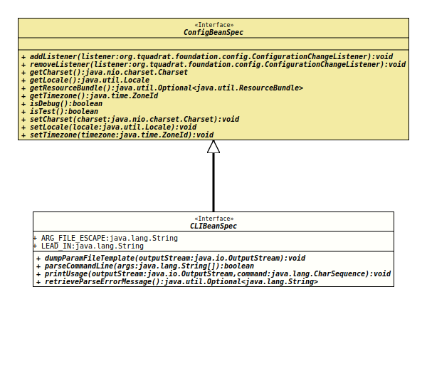

- All Superinterfaces:
ConfigBeanSpec
- All Known Subinterfaces:
CLIBean
@ClassVersion(sourceVersion="$Id: CLIBeanSpec.java 884 2021-03-22 18:02:51Z tquadrat $")
@API(status=STABLE,
since="0.0.1")
public interface CLIBeanSpec
extends ConfigBeanSpec
When a configuration bean should be initialised from the command line, the
respective specification interface needs to extend this interface.
- Author:
- Thomas Thrien (thomas.thrien@tquadrat.org)
- Version:
- $Id: CLIBeanSpec.java 884 2021-03-22 18:02:51Z tquadrat $
- Since:
- 0.0.1
- UML Diagram
-

UML Diagram for "org.tquadrat.foundation.config.CLIBeanSpec"
{kind=link}
-
Field Summary
Fields -
Method Summary
Modifier and TypeMethodDescriptionvoiddumpParamFileTemplate(OutputStream outputStream) Dumps a parameter file template to the givenOutputStream.booleanparseCommandLine(String[] args) Parses the command line.
As a result from parsing the given command line arguments, the accordingly annotated properties will be initialised with the values from the command line.
Arguments starting with@(like@param.lst) are treated as a file that contains further arguments.
Assuming the fileparam.lsthas the following contents:voidprintUsage(OutputStream outputStream, CharSequence command) Prints a usage message to the givenOutputStream.Retrieves the message for the error caused by the last call toparseCommandLine(String[]), given that this returnfalse.Methods inherited from interface org.tquadrat.foundation.config.ConfigBeanSpec
addListener, getCharset, getLocale, getResourceBundle, getTimezone, isDebug, isTest, removeListener, setCharset, setLocale, setTimezone
-
Field Details
-
ARG_FILE_ESCAPE
The escape character for argument files: "@".- See Also:
-
LEAD_IN
The lead-in character for an option name: "-".- See Also:
-
-
Method Details
-
dumpParamFileTemplate
Dumps a parameter file template to the givenOutputStream.- Parameters:
outputStream- The target output stream.- Throws:
IOException- Something went wrong when writing to the output stream.- See Also:
-
parseCommandLine
Parses the command line.
As a result from parsing the given command line arguments, the accordingly annotated properties will be initialised with the values from the command line.
Arguments starting with@(like@param.lst) are treated as a file that contains further arguments.
Assuming the fileparam.lsthas the following contents:
and-opt0 value0 -opt1 value1 -- arg0 arg1argslooks like this:-opt value @param.lst arg, the resulting command line arguments set would be:
In case the file could not be opened for whatever reason, the parameter will not be replaced.-opt value -opt0 value0 -opt1 value1 -- arg0 arg1 arg- Parameters:
args- The command line arguments; usually the same as the arguments to the methodmain().- Returns:
trueif the command line could be parsed without issues,falseotherwise.
-
printUsage
Prints a usage message to the givenOutputStream.- Parameters:
outputStream- The output stream.command- The command used to start the program.- Throws:
IOException- A problem occurred on writing to the output stream.
-
retrieveParseErrorMessage
Retrieves the message for the error caused by the last call toparseCommandLine(String[]), given that this returnfalse.- Returns:
- An instance of
Optionalthat holds the error message.
-